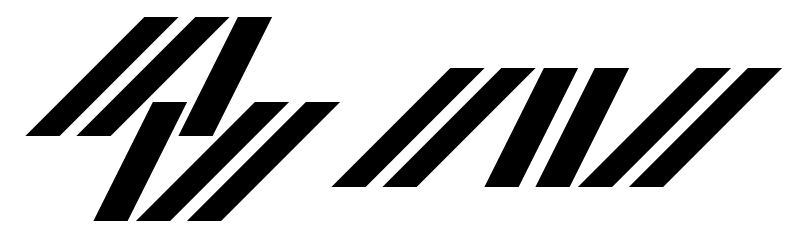

2016年 / 作業時間 6h（ラフ作成含む） / Adobe IllustratorCC
開業予定のカーカスタムショップ屋号ロゴ案（仮名称に基づくもの）です。
上案は納車車両の貼付ステッカー等に使いやすい長方形主体のまま可読性を失わないように、下案は頭文字をストライプのように図案化させつつ変形も利くように留意しました。
ロゴ作字: カーカスタムショップ屋号案

2016年 / 作業時間 6h（ラフ作成含む） / Adobe IllustratorCC
開業予定のカーカスタムショップ屋号ロゴ案（仮名称に基づくもの）です。
上案は納車車両の貼付ステッカー等に使いやすい長方形主体のまま可読性を失わないように、下案は頭文字をストライプのように図案化させつつ変形も利くように留意しました。